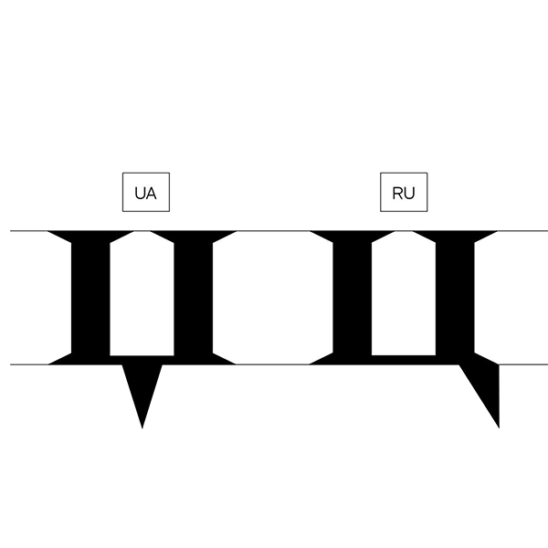
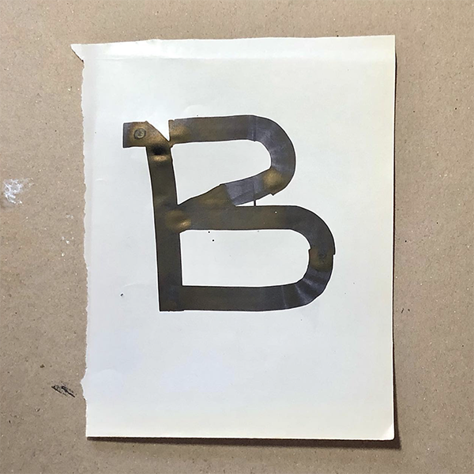
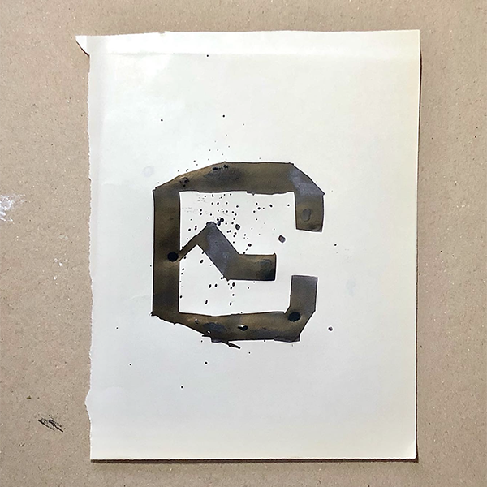
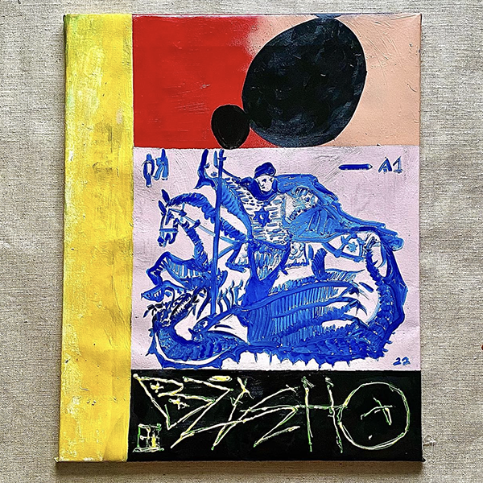
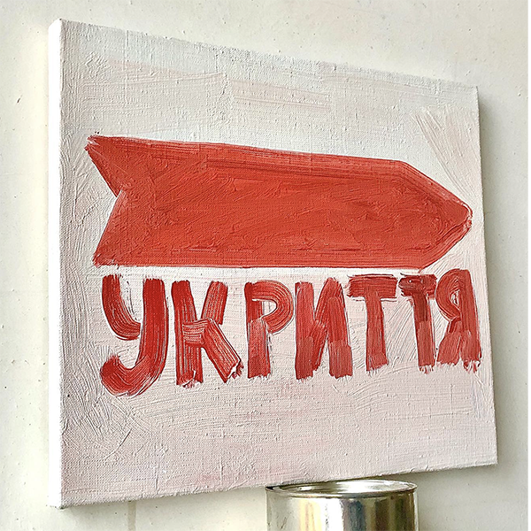
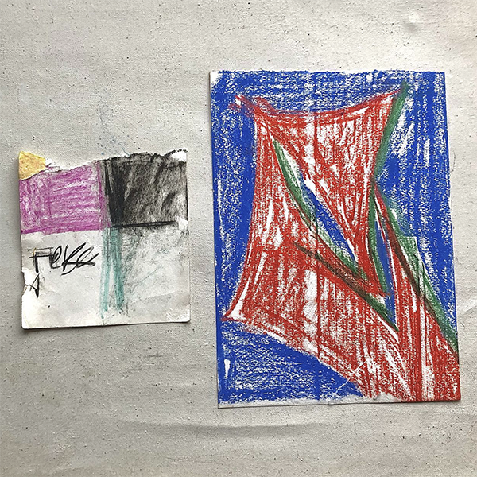

Daedalus Li[I, an MFA student in graphic design] asked Ivan Tsanko[Ukrainian type designer]seven questions on seven days, and here are his answers.
Day ONE
I asked him to introduce himself through a poem and an image, he wrote me back a poem by Ukranian Poet
Ivan Franko (Іван Франко)
Birth of A New Order
I am the son of the nation,
What goes aloft, even though it was locked in a fetters.
My shout - work, happiness and freedom!
After all, I'm a human, a prologue, not an epilogue.
He also drew this image:

Day TWO
I asked him where is his hometown, he told me he grows up and still lives in Kyiv, Ukraine.
Day THREE
I asked him how did he get into making typography, he had a quite personal response:
I start(ed to) work with type design few years ago because I see big national idea in me and my country. Really big challenge to develop Cyrillic.
You know where I am from, I think you look world news , so hope you understand that my national idea of fight for identity is now, and my work is now, about all of this.
I live and see how my country start be free from imperial occupation from firstly imperial russia, usssr, russian federation. It’s all about one, about what is freedom.
I want to change visual environment around me. Make ads on street better, make interface better. More character, unique, individually. I think my interest in form new Ukraine font of letter. It’s why you see in my fonts letter like this -џ- not like this -ц-. It’s letter 'Tse'.

Day FOUR
I asked him what's his relationship with his practice, he did not restain himself within typography or graphic design solely.
[...]typography is only one form. I start a draw in 3-4 years old, my grandmother be a oil painter, so a lot of time I grew up in her workspace. So, my relationship with my practise it’s - live. It’s what I do all of my live and hope do it to my last day 🤍
Day FIVE
I asked him to show some of his process for his work.


Day SIX
I asked him where does he work, apart from his own typographic work.
I use this crazy local graphic reception for my work, like really eye-catchy Color’s or composition. I think in post-Soviet country we have a lot of interesting visual logic.
It’s because capitalism come to us only in 1990, part of the city build with logic about one store for one community.
But in real world it’s not work like this. So, now we have “small architecture forms”, it’s street small store.
Day SEVEN
We were in a deep converstion about how the embodied experience has contribured into our artistic output, special the surrounding environment growing up. he traced back to some childhood memories:
In USSR we didn’t have money and magazine, coffee shop and mall. All of this small and medium business system work because we have system where supply (is the) demand.
It’s so important to understand what's the start of the formal logic when we work, like what is be first in graphic and communication. Because graphic design and typography firstly for me it’s about communication. And (enough) historical background, I think, make really full solutions and results.
He also shared some of his paintings and doodles.



Days After ...
I am stilling waiting for him to sending me more images and clarify some of his answers, but I think I need to be more patient, as he is experiencing the national crisis and in quite a sorrow about what his community is going through.
I had no idea where he is resided when approaching him for this interview. However, somehow we are both glad this interview happened during this turbulent time, where he could talk about what he is passionate about at ease.
COLOPHON
This Interview is conducted by Daedalus Li.
Webpage designed by Daedalus Li,
typeset in Craftwork Sans & Glock Grotesque 2.0, designed by Ivan Tsanko.
❥ Thank you for reading ✳